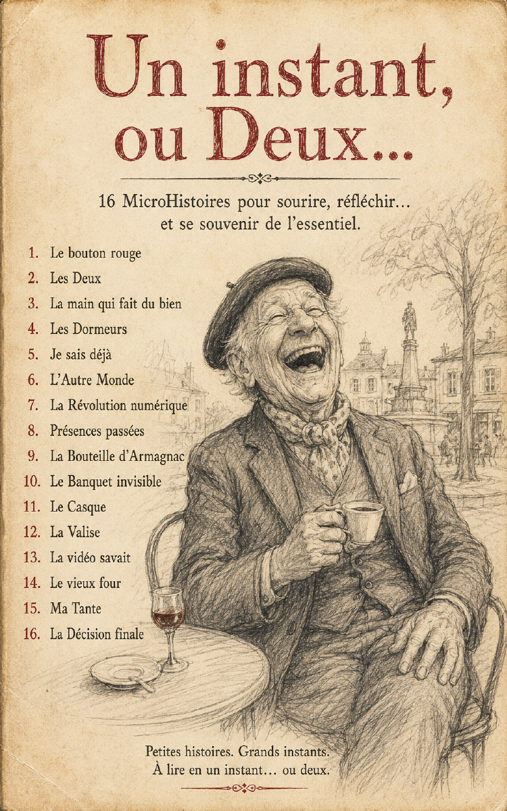
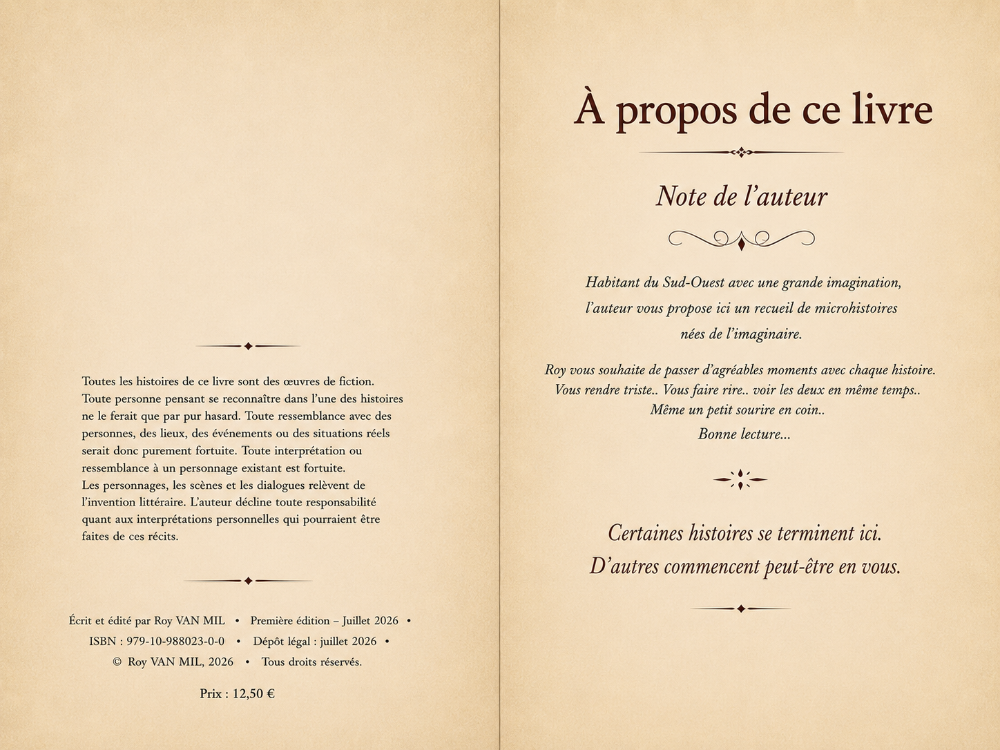

Un instant, ou Deux…
Roy VAN MIL
16 microhistoires pour sourire, réfléchir… et se souvenir de l'essentiel.
Un grand-père qui bondit dans un salon. Une simple poignée de main qui fait du bien. Un château qui se réveille pour un banquet invisible. Des machines qui jugent, des voisins qu'on croyait perdus, des présences qu'on ne devrait plus revoir.
Un petit livre à emporter partout, à lire par fragments, et à laisser vivre dans sa propre imagination.
- Le bouton rouge
- Les Deux
- La main qui fait du bien
- Les Dormeurs
- Je sais déjà
- L'Autre Monde
- La Révolution numérique
- Présences passées
- La Bouteille d'Armagnac
- Le Banquet invisible
- Le Casque
- La Valise
- La vidéo savait
- Le vieux four
- Ma Tante
- La Décision finale
Quelques illustrations
Des dessins au crayon, entre douceur et étrangeté. Cliquez pour agrandir.
⤢

⤢
⤢ ⤢
⤢
 ⤢
⤢
 ⤢
⤢
 ⤢
⤢
 ⤢
⤢
 ⤢
⤢